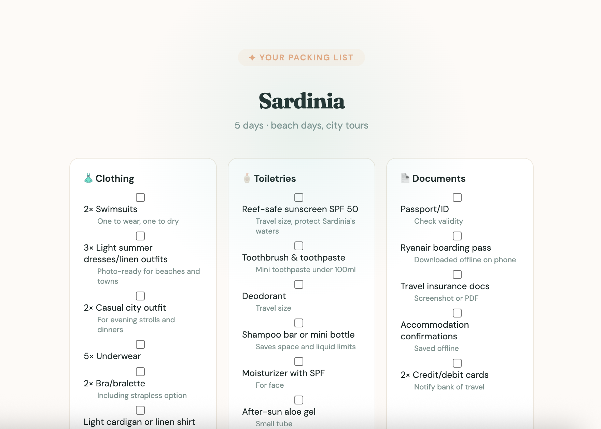

Overpacker
It started with a Ryanair gate agent stopping me and making me repack my entire bag on the spot because it was a few centimetres too wide. I had to empty one bag into another, stuff everything in, weigh it in the little metal frame thing — the whole humiliating routine. And then the same week, I watched my friend spend twenty minutes tearing her luggage apart looking for a necklace she'd misplaced somewhere inside.
Neither of those things is a catastrophe, but they're the kind of friction that makes travel feel harder than it should, and both of them come down to the same thing: packing without a real system. I'd been wanting to build something with an AI API for a while. Not just use AI as a tool but actually understand how calling one works, what goes into the prompt, how you shape the output. Overpacker felt like the right scope. Small enough to actually finish. Real enough to actually use.
The product is simple. You enter your destination, travel dates, what you're doing, and your packing style. It generates a personalised, categorised list in seconds — specific to your trip, not a generic checklist that tells everyone to bring a universal adapter and a travel pillow. Users can save trips under their account and come back to check things off as they pack.

Generated list for a 5-day trip to Sardinia
The two things I cared most about technically were the Claude API integration and building a proper login and authentication system. The login piece especially — I'd always avoided it in previous attempts at building things because it felt like a wall. Turns out with the right tools it's actually approachable, and now that I've done it once it's something I can carry into everything I build from here.
V1 is live and free. The next version is about making it learn. Right now it generates a solid list for any trip, but it doesn't know you. V2 will let users build out their own preferences over time — what you always bring, what you never pack, so the list gets more accurate the more you use it. More updates to come!
Try Overpacker →